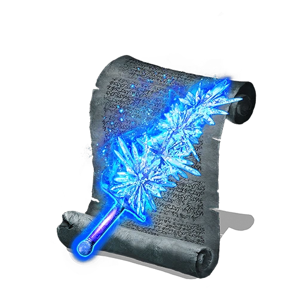
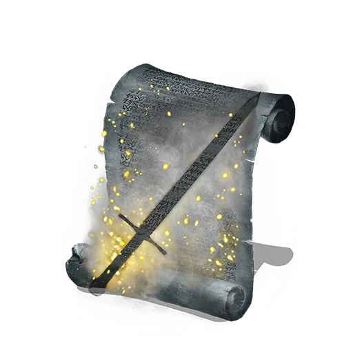
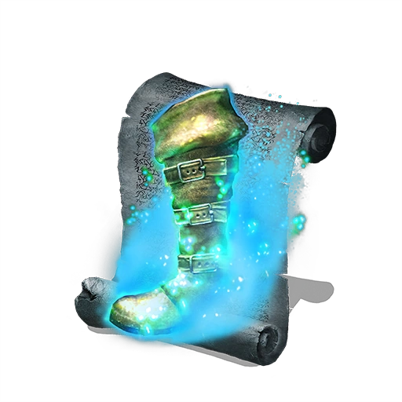

Hechizos
Informacion general
Los hechizos están alineados con la Inteligencia. Para lanzar un hechizo, el jugador debe equiparse con un bastón. También existen algunas armas que actúan como catalizador para lanzar hechizos. Los hechizos pueden ser comprados a varios personajes o encontrados como botín en cadáveres o cofres. Entregar pergaminos a Orbeck de Vinheim desbloqueará hechizos adicionales para su compra. La mayoría de hechizos se enfocan en el daño mágico, mientras que hay otros que se enfocan en algún tipo de utilidad.
- Afinidad
- Arma mágica
- Arma mágica de cristal 
- Arma oculta 
- Asustar 
- Camaleón

Un hechizo oscuro prohibido. Proyecta una oscura manifestación de humanidad. Parece ser una expresión de envidia, o quizá de amor hacia otro, que perseguirá con tenacidad a su objetivo. Incluso si, al igual que tantos deseos humanos, solo lo lleva a la desgracia.

Hechizo para hechiceros que blanden espadas. Refuerza el arma derecha con magia. El poder de los espadachines hechiceros de Vinheim está contenido en este hechizo y el escudo mágico. Muchos guerreros aprenden magia solo por este hechizo.
Mejora más el arma mágica mediante la cristalización. Refuerza el arma derecha con cristal. Tras mucho experimentar, Logan descubrió que el medio de cristal facilitaba un vínculo más fuerte entre arma y alma.
Hechizo perdido de Oolacile, una tierra de antiguos hechizos dorados. Vuelve invisible el arma derecha. El arma en sí no experimenta cambios inherentes. Como en cualquier otra herramienta, su utilidad depende del ingenio del lanzador.
Hechizo creado por cierto hechicero subrepticio de la Escuela de Dragones de Vinheim. Enmascara el ruido y reduce el daño de caída. El simple hecho de dominar este hechizo permite que los espías de Vinheim exijan un precio elevado por sus servicios.

Hechizo perdido de Oolacile, una tierra de antiguos hechizos dorados. Te transforma en algo que no llama la atención. Lejos de estar desarrollada formalmente, esta magia es en realidad el resultado de la travesura de una joven que buscaba consuelo frente a la soledad de los bosques al anochecer.